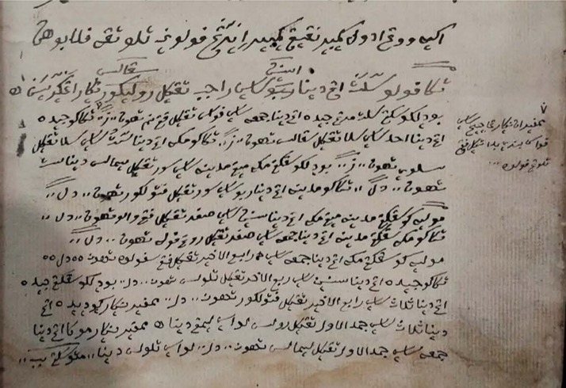

1810s onwards
Trade & Networks
A port connects people and ideas
Singapore's emergence as a major trading port in the 19th century attracted Muslim merchants, scholars and pilgrims from across the Malay world and beyond. These transregional networks facilitated not only the movement of people and goods, but also the circulation of religious knowledge, scholarly ideas and intellectual traditions, establishing Singapore as an important meeting point within the wider Muslim world.


View image ↗From the Archive
Image and identification supplied by the user, 5 November 2026. Collection credit and reproduction permissions have not been supplied. Historical attribution has not been independently verified.